소방설비산업기사(기계) (2012-03-04 기출문제)
1과목: 소방원론
1. 가연성가스의 공기 중 폭발범위를 옳게 표현한 것은?
- 가연성가스와 공기와의 혼합가스에 점화원을 주었을 때 폭발이 일어날 수 있는 가연성 가스의 용량 %의 범위
- 동일 압력에서 기체상태로 존재하기 위한 온도 범위
- 폭발에 의하여 피해가 발생할 수 있는 가연성가스의 공기 중 질량 %의 범위
- 폭굉이 발생할 수 있는 공기 중 가연성가스의 질량 %의 범위
(정답률: 75%)

2. 건축물의 주요구조부가 아닌 것은?
- 차양
- 주계단
- 내력벽
- 기둥
(정답률: 88%)
3. CO2의 증기비중은 약 얼마인가?
- 1.5
- 1.9
- 28.8
- 44.1
(정답률: 62%)
4. 플래쉬 오버(flash over) 현상을 가장 적절히 설명한 것은?
- 역화현상
- .탱크 밖으로 기름이 분출되는 현상
- 온도상승으로 연소의 급속한 확대현상
- 외부에서의 연소현상
(정답률: 81%)
5. 적린의 착화온도는 약 몇 ℃ 인가?
- 34
- 157
- 200
- 260
(정답률: 62%)
6. 제1종 분말소화약제의 주성분에 해당하는 것은?
- NaHCO3
- KHCO3
- NH4HCO3
- NH4H2PO4
(정답률: 73%)
7. 다음 중 할로겐폭 원소가 아닌 것은?
- F
- Cl
- Br
- Fr
(정답률: 79%)
8. 화재가 발생하여 온도가 21℃ 에서 650℃가 되었다면 공기의 부피는 처음의 약 몇 배가 되는가? (단, 압력은 동일하다.)
- 3.14
- 6.25
- 9.17
- 12.⑤
(정답률: 65%)
9. Halon 1211의 화학식으로 옳은 것은?
- CF2BrCl
- CFBrCl2
- C2F4Br2
- CH2BrCl
(정답률: 75%)
10. 가연성 액체의 일반적인 특성이 아닌 것은?
- 인화의 위험이 있다.
- 점화원의 접근은 위험하다.
- 정전기가 점화원이 될 수 있다.
- 착화온도가 높을수록 위험도가 높다.
(정답률: 73%)
11. LPG의 일반적인 특징으로 옳은 것은?
- C8H8가 주성분이다.
- 공기보다 무겁다.
- 도시가스보다 가볍다.
- 물에 잘 녹으나 알코올에는 용해되지 않는다.
(정답률: 59%)
12. 열전달 방법 3가지에 해당하지 않는 것은?
- 복사
- 확산
- 전도
- 대류
(정답률: 84%)
13. 유류탱크 화재시 비점이 낮은 다른 액체가 밑에 있는 경우 연소에 다른 고온층이 강하하여 아래의 비점이 낮은 약체에 도달한 때 급격히 기화하고 다량의 유류가 욉로 넘치는 것을 무엇이라고 하는가?
- 보일오버
- 백드래프트
- 굴뚝효과
- 드롭오버
(정답률: 70%)
14. 화재시 건축물의 피난안전 계획으로 부적합한 것은?
- 건축물의 용도를 고려한 피난계획수립
- 막다른 복도의 설치
- 안전구획의 설치
- 단순명료한 피난 경로 구성
(정답률: 84%)
15. 화재발생시 물을 사용하여 소화하면 더 위험해지는 것은?
- 피크린산
- 질산암모늄
- 나트륨
- 황린
(정답률: 74%)
16. 분말소화설비에 사용하는 소화약제 중 차고 또는 주차장에 설치하는 분말소화설비의 소화약제로 적합한 것은?
- 제1종
- 제2종
- 제3종
- 제4종
(정답률: 84%)
17. 다음 중 연소의 3요소가 아닌 것은?
- 점화원
- 공기
- 연료
- 촉매
(정답률: 75%)
18. 화재의 분류상 일반화재에 해당하는 것은?
- A급
- B급
- C급
- D급
(정답률: 86%)
19. 물 1g이 100℃에서 수증기로 되었을 때의 부피는 1기압을 기준으로 약 몇 L 인가?
- 0.3
- 1.7
- 10.8
- 22.4
(정답률: 42%)
20. 다음 중 연소와 가장 관련이 있는 반응은?
- 산화반응
- 환원반응
- 치환반응
- 중화반응
(정답률: 79%)
2과목: 소방유체역학
21. 소화배관을 흐르고 있는 물의 동압이 144Pa 이었다면 유속은 약 몇 m/s 인가? (단, 물의 밀도는 1000kg/m3 이다.)
- 0.54
- 14.7
- 14.7/9.8
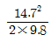
(정답률: 32%)
22. 27 kPa의 압력은 수은주 높이로 약 몇 mm 가 되겠는가? (단, 수은은 비중은 13.6 이다.)
- 157
- 203
- 264
- 557
(정답률: 44%)
23. 온도가 20℃이고, 100kPa 압력하의 공기를 가역단멸 과정으로 압축하여 체적율 50%로 줄였을 때 압력은 몇 kPa 인가? (단, 공기의 비열비는 1.4 이다.)
- 255.1
- 258.3
- 263.9
- 267.3
(정답률: 23%)
24. 20kg의 액화 이산화탄소가 20℃의 대기(표준대기압)중으로 방출되었을 때 이산화탄소의 체적은 약 몇 m3이 되겠는가? (단, 일반기체상수는 8314 J/kmolㆍK이다.)
- 6.8
- 7.2
- 9.3
- 11.0
(정답률: 37%)
25. 다음 전단응력과 변형률 그래프에서 뉴턴 유체(Newtonianfluid)를 나타내는 것은?
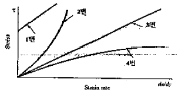
- 1번
- 2번
- 3번
- 4번
(정답률: 60%)
26. 직경 7.5cm인 매끈한 직원관을 통하여 물을 3m/s의 속도로 보내려 한다. 무디 선도로부터 관마찰계수는 0.03임을 알았다. 관의 길이가 100m이면 압력강하는 몇 kPa인가?
- 180
- 190
- 200
- 210
(정답률: 49%)
27. 비중이 S인 액체의 표면으로부터 x[m] 길이에 있는 점의 계기 압력은 수은주로 몇 mm인가? (단, 수은의 비중은 13.6이다.)
- 13600Sx
- 13.6Sx
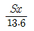
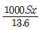
(정답률: 44%)
28. 다음 물성량 중 길이의 단위로 표시되지 않는 것은?
- 속도수두
- 전압(全壓)
- 수차의 유효낙차
- 펌프 전양정
(정답률: 58%)
29. 이상기체의 엔탈피가 변하지 않는 과정은?
- 가역단열과정
- 비가역단열과정
- 교축과정
- 정적과정
(정답률: 57%)
30. 체적이 0.031 m3인 알콜이 51000kPa의 압력을 받으면 체적이 0.025m3으로 축소한다. 이 때 체적탄성계수는?
- 2.335×108Pa
- 2.635×108Pa
- 1.235×107Pa
- 2.535×106Pa
(정답률: 51%)
31. 다음 중 대류 열전달과 관계없는 경우는?
- 팬(fan)을 이용해 컴퓨터를 식힌다.
- 뜨거운 커피에 바람을 불어 식힌다.
- 에어컨은 높은 곳에 라디에이터는 낮은 곳에 설치한다.
- 판자를 화로 앞에 놓아 열을 차단한다.
(정답률: 65%)
32. 하나의 잘 설계된 원심 펌프의 임펠러 직경이 10cm 이다. 똑같은 모양의 펌프를 임펠러 직경이 20cm로 만들었을 때, 같은 회전수에서 운전하면 새로운 펌프의 설계점 성능 특성 중 유량은 몇 배가 되는가? (단, 레이놀즈수의 영향은 무시한다.)
- 동일하다.
- 2배
- 4배
- 8배
(정답률: 27%)
33. 배관의 관로상에 설치하는 유량측정 장치로 배관의 관로를 축소하여 그때 발생하는 차압을 이용하는 유량계로서 압력손실이 가장 큰 것은?(오류 신고가 접수된 문제입니다. 반드시 정답과 해설을 확인하시기 바랍니다.)
- 노즐(nozzle)
- 벤츄리 미터(venturi meter)
- 오리피스 미터(orifice meter)
- 피토 관(pito tube)
(정답률: 40%)
34. 펌프의 공동현상(cavitation) 방지 대책은?
- 흡입 관경을 작게 한다.
- 흡입 속도를 감소시킨다.
- 펌프를 수원보다 되도록 높게 설치한다.
- 흡입 압력을 유체의 증기압보다 낮게 한다.
(정답률: 34%)
35. 유량 1m3/min, 전양정 20m로 물을 송출하는 펌프가 있다. 이 펌프를 가동하기 위한 축동력은 약 몇 kW인가? (단, 펌프의 효율은 80%이다.)
- 4.1
- 6.7
- 8.4
- 12.1
(정답률: 53%)
36. 반경 R0인 원형관에 유체가 흐를 때 최대속도를 Umax로 표시하면 반경 위치 R에서의 속도 분포식은 어떻게 표시할 수 있는가? (단, 유체는 층류로 흐른다.)
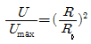
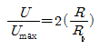
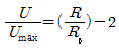
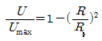
(정답률: 43%)
37. 부차적 손실계수가 4인 밸브를 관마찰계수가 0.035이고, 관지름이 3cm인 관으로 환산한다면 관의 상당길이는 약 몇 m 인가?
- 2.57
- 3.⑤
- 3.43
- 3.95
(정답률: 58%)
38. 직경이 0.4m의 파이프에 1m3/min의 유량으로 물을 수송한다고 할 때 질량유량은 약 몇 kg/s 인가?(오류 신고가 접수된 문제입니다. 반드시 정답과 해설을 확인하시기 바랍니다.)
- 16.67
- 1.67
- 1000
- 0.001
(정답률: 41%)
39. 반경 4m, 길이 10m인 4분 실린더(quarter cylinder) AB가 수면으로부터 3m 아래에 수평으로 놓여 있다. 4분 실린더 AB에 작용하는 수압에 의한 합력의 크기는 약 몇 kN인가?(오류 신고가 접수된 문제입니다. 반드시 정답과 해설을 확인하시기 바랍니다.)
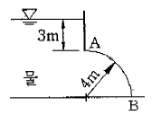
- 2173
- 2257
- 2386
- 2475
(정답률: 22%)
40. 그림과 같이 수평으로 분사된 유량 Q의 분류가 경사진 고정 평판에 충돌한 후 양쪽으로 분리되어 흐르고 있다. 윗 방향의 유량 Q1=0.8Q 일 때 수형선과 판이 이루는 각 θ는 몇 도 인가? (단, 이상유체의 흐름이고 중력과 압력은 무시한다.)
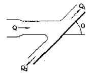
- 50.4
- 53.1
- 56.2
- 59.2
(정답률: 38%)
3과목: 소방관계법규
41. 연면적 또는 바닥면적 틈에 관계없이 건축허가 동의를 받아야 하는 소방 대상물은?
- 청소년시설
- 공연장
- 항공기격납고
- 차고 주차장
(정답률: 68%)
42. 위험물의 지정수량에서 산화성 고체인 중크롬산염류의 지정수량은?
- 3000kg
- 1000kg
- 300kg
- 50kg
(정답률: 66%)
43. 다음 소방시설 중 피난설비에 속하지 않는 것은?
- 방열복
- 유도표지
- 미끄럼대
- 무선통신보조설비
(정답률: 70%)
44. 2급 소방안전관리대상물의 소방안전관리자로 선임될 수 없는 사람은?
- 위험물기능사 자격을 가진 사람
- 소방공무원으로 3년 이상 근무한 경력이 있는 사람
- 외용소방대원으로 2년 이상 근무한 경력이 있는 사람
- 소방본부 도는 소방서에서 1년 이상 화재진압 또는 보조업무에 종사한 경력이 있는 사람
(정답률: 50%)
45. 전문소방시설공사업의 등록을 하고자 할 때 법인의 자본급의 기준은?
- 5천만원 이상
- 1억원 이상
- 2억원 이상
- 3억원 이상
(정답률: 79%)
46. 화재경계지구에 관한 사항으로 소방본부장이나 소방서장이 수행하여야 할 직무가 아닌 것은?
- 화재가 발생할 무려가 높아 그로 인한 피해가 클 것으로 예상되는 일정 지역을 화재경계지구로 지정할 수 있다.
- 화재경계지구안의 소방대상물 위치ㆍ구조 및 설비 등에 대하여 소방특별조사를 하여야 한다.
- 화재경계지구안의 관계인에 대하여 소방에 필요한 훈련 및 교육을 실시할 수 있다.
- 화재경계지구안의 관계인에 대한 소방용수시설ㆍ소화 기구 등의 설치를 명할 수 있다.
(정답률: 59%)
47. 학교의 지하층인 경우 바닥면적의 합계가 얼마 이상인 경우 연결살수설비를 설치하여야 하는가?
- 500m2
- 600m2
- 700m2
- 1000m2
(정답률: 30%)
48. 소방시설공사업법에서 정하고 있는 “소방시설업”에 속하지 않는 것은?
- 소방시설 관리업
- 소방시설 공사업
- 소방공사 감리업
- 소방시성 설계업
(정답률: 66%)
49. 소방용수시설의 설치기중에서 급수탑을 설치하고자 할 때 개폐밸브의 설치 높이는?
- 지상에서 1.0m 이상 1.5m 이하
- 지상에서 1.5m 이상 1.7m 이하
- 지상에서 1.5m 이상 2.0m 이하
- 지상에서 1.2m 이상 1.8m 이하
(정답률: 72%)
50. 소방시설 등의 자체점검 중 종합정밀점검을 실시한 자는 며칠 이내에 그 경과보고서 등을 관할소방서장 또는 소방본부장에게 제출하여야 하는가?(관련 규정 개정전 문제로 여기서는 기존 정답인 3번을 누르면 정답 처리됩니다. 자세한 내용은 해설을 참고하세요.)
- 7일 이내
- 15일 이내
- 30일 이내
- 60일 이내
(정답률: 62%)
51. 소방신호의 종류에 해당하지 않는 것은?
- 해제신호
- 발화신호
- 훈련신호
- 출동신호
(정답률: 58%)
52. 자동화재속보설비를 설치하여야 하는 특정소방대상물에 대한 설명으로 옳지 않는 것은?
- 창고시설로서 바닥면적이 1500m2 이상인 층이 있는 것
- 공장으로서 바닥면적이 500m2 이상인 층이 있는 것
- 노유자시설로서 바닥면적이 500m2 이상인 층이 있는 것
- 문화재보호법에 따라 국보 또는 보물로 지정된 목조건축물
(정답률: 40%)
53. 소방체험관을 설립하여 운영할 수 있는 사람은?
- 소방본부장
- 소방방재청장
- 시ㆍ도지사
- 행정안전부장관
(정답률: 70%)
54. 위험물을 취급하는 건축물에 설치하는 채광ㆍ조명 미 환기설비의 기준 등에 관한 설명으로 잘못된 것은?
- 채광설비는 연소의 우려가 없는 장소에 설치하되 채광면적은 최대로 할 것
- 환기설비의 환기구는 지붕위 또는 지상 2[m]이상의 높이에 회전식 고전벤티레이터 또는 루푸팬방식으로 설치할 것
- 환기설비의 환기는 자연배기방식으로 할 것
- 환기설비의 급기구는 낮은 곳에 설치할 것
(정답률: 47%)
55. 불을 사용하는 설비의 관리기준 등에서 경유ㆍ등유 등 액체연료를 사용하는 보일러의 연료탱크에는 화재 등 긴급상황이 발생할 경우 연료를 차단할 수 있는 개폐밸브를 연료탱크로부터 몇 [m]이내에 설치하영 하는가?
- 0.1m
- 0.5m
- 1.0m
- 1.5m
(정답률: 53%)
56. 위험을 제조소 등의 완공검사필증을 잃어버려 재교부를 받은 자가 잃어버린 완공검사필증을 발견하는 경우에는 이를 며칠 이내에 완공검사필증을 재교부한 시ㆍ도지사 에세 제출하여야 하는가?
- 7일
- 10일
- 14일
- 30일
(정답률: 27%)
57. 공동 소방안전관리자를 선임하여야 하는 대상물 중 고층건축물은 지하층을 제외한 층수가 얼마 이상인 건축물에 한하는가?
- 6층
- 11층
- 20층
- 30층
(정답률: 75%)
58. 소방대상물이 있는 장소 및 그 이웃지역으로서 화재의 예방ㆍ경계ㆍ진압, 구조ㆍ구급 등의 활동에 필요한 지역으로 정의되는 것은?
- 방화지역
- 밀집지역
- 소방지역
- 관계지역
(정답률: 64%)
59. 위험물 제조소 및 일반취급소로서 연면적이 500[m2] 이상인 것에 설치하여야 하는 경보설비는?
- 비상경보설비
- 자동화재탐지설비
- 확성장치
- 비상방송설비
(정답률: 57%)
60. 상주공사감리의 방법에서 감리업자가 지정하는 감리원은 행정안전부령으로 정하는 기간 동안 공사현장에 상주하여 업무를 수행하고 감리일지에 기록해야 한다. 여기서 “행정안전부령으로 정하는 기간”이란?
- 착공신고 때부터 주 1회 이상 완공검사를 신청하는 때까지
- 착공신고 때부터 주 1회 이상 완공검사증명서를 발급 받을 때까지
- 소방시설용 배관을 설치하거나 매립하는 때부터 완공 검사를 신청하는 때까지
- 소방시설용 배관을 설치하거나 매립하는 때부터 소방시설 완공검사증명서를 발급 받을 때까지
(정답률: 48%)
4과목: 소방기계시설의 구조 및 원리
61. 폐쇄형 스프링클러헤드를 사용하는 연결살수설비의 주배관을 연결할 수 없는 것은?
- 옥내소화전설비의 주배관
- 옥외소화전설비의 주배관
- 수도배관
- 옥상수조
(정답률: 63%)
62. 다음 내용 중 피난기구의 설치위치로서 가장 부적합한 곳은?
- 피난시 사람이 잘 볼 수 있는 곳
- 피난에 필요한 개구부가 있는 곳
- 피난 계단과 가까운 곳
- 지상에 충분한 공간이 있는 곳
(정답률: 43%)
63. 분말소화설비의 화재안전기준에서 분말소화약제의 저장용기를 가압식으로 설치할 때 안전밸브의 작동압력은 얼마인가?
- 내압시험압력의 0.8배 이하
- 내압시험압력의 1.8배 이하
- 최고사용압력의 0.8배 이하
- 최고사용압력의 1.8배 이하
(정답률: 55%)
64. 다음 설명 중 A, B, C에 들어갈 설비에 해당하지 않는 것은?
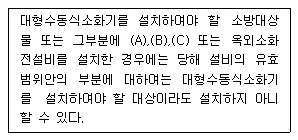
- 제연설비
- 옥내소화전설비
- 물분무등소화설비
- 스프링클러설비
(정답률: 72%)
65. 물분무소화설비에 있어서 전기절연을 위해 전기기기와 물분무헤드의 이격거리가 맞지 않는 것은?
- 110 초과 154(kV) 이하 : 150cm 이상
- 154 초과 181(kV) 이하 : 180cm 이상
- 181 초과 220(kV) 이하 : 200cm 이상
- 220 초과 275(kV) 이하 : 260cm 이상
(정답률: 69%)
66. 옥내소화전 설비에서 기동용수압개폐장치(압력챔버)의 주된 설치 목적은?
- 배관내의 압력을 감소하기 위하여
- 유수를 감지하기 위하여
- 헤드의 일정한 압력을 유지하기 위하여
- 펌프를 가동시키기 위하여
(정답률: 44%)
67. 습식스프링클러 소화설비에서 시험용 밸브의 설치위치는 어느 곳이 가장 적합한가?
- 유수검지장치에서 가장 가까운 곳에 설치한다.
- 유수검지장치에서 가장 먼 곳에 설치한다.
- 펌프토출 측 게이트 밸브 상단에 설치한다.
- 펌프토출 측 게이트 밸브 하단에 설치한다.
(정답률: 52%)
68. 스프링클러 헤드를 무대부 천장에 설치할 때 천장 각 부분으로부터 하나의 스프링클러헤드까지의 수평거리는 몇 m 이하인가?
- 3.0
- 2.3
- 2.1
- 1.7
(정답률: 46%)
69. 옥외소화전설비의 설치, 유지에 관한 기술상의 기준 중 잘못된 것은?
- 소화전함 표면에는 “호스격납함”이라고 표시한다.
- 소화전함은 옥외소화전마다 그로부터 5m 이내의 장소에 설치한다.
- 가압송수장치의 시동을 표시하는 표시등은 적색으로 하고, 소화전함 상부 또는 그 직근에 설치한다.
- 소화전함이 31개 이상 설치된 때에는 옥외소화전 3개 마다 1개 이상의 소화전함을 설치한다.
(정답률: 62%)
70. 포소화설비의 수동식 기동장치의 조작부 설치위치는?
- 바닥으로부터 0.5m 이상, 1.2m 이하
- 바닥으로부터 0.8m 이상, 1.2m 이하
- 바닥으로부터 0.8m 이상, 1.5m 이하
- 바닥으로부터 0.5m 이상, 1.5m 이하
(정답률: 78%)
71. 할론화합물소화설비의 자동식 기동장치의 종류에 속하지 않는 것은?
- 기계식 방식
- 전기식 방식
- 가스 압력식
- 수압 압력식
(정답률: 61%)
72. 분말소화설비에 대한 설명으로 틀린 것은?
- 인산염은 제3종 분말소화약제이다.
- 차고 또는 주차장에 설치하는 분말소화설비의 소화약제는 제3종 분말소화약제이다.
- 분말소화설비의 저장용기의 충전비는 0.8이상이어야 한다.
- 탄산수소칼륨과 요소가 화합된 제4종 분말소화약제의 1kg당 저장용기의 내용적은 1.50ℓ이다.
(정답률: 68%)
73. 차고에 단백포를 사용하여 포헤드방식의 포소화설비를 하고자 한다. 이 때 포소화약제의 1분장 방사량은 바닥면적 1m2당 몇 ℓ이상인가?
- 단백포 원액 3.7ℓ
- 단백포 수용액 3.7ℓ
- 단백포 원액 6.5ℓ
- 단백포 수용액 6.5ℓ
(정답률: 31%)
74. 축압식 분말소화기에 관한 설명으로 가장 적합한 것은?
- 축압식은 용기내에 동일 액제로 축압한다.
- 장기간 보관시에도 가스누설이 없다.
- 지시압력계는 0.98Mpa 이상이어야 한다.
- 축압식은 용기에 질소로 축압한다.
(정답률: 44%)
75. 연결송수관설비를 설치하지 않아도 되는 대상물은?
- 층수가 5층 이상으로서 연면적 6천 m2 이상
- 지하층의 층수가 3 이상이고 지하층 바닥면적 합계가 1천 m2이상
- 지하층을 포함한 층수가 7층 이상
- 지하가 중 터널의 길이가 500m 이상
(정답률: 46%)
76. 다음 중 이산화탄소소화설비에 음향경보장치를 해야 하는 가장 주된 이유는?
- 가스방출과 동시에 경보로서 방출을 알리기 위함
- 경보를 듣고 수동으로 방출시키기 위함
- 방출과 동시에 발하는 경보를 듣고 개구부를 닫아주기 위함
- 경보를 발하여 내실자를 대피시킨 후에 방출하기 위함
(정답률: 61%)
77. 특별피난계단의 부속실에 제연설비를 하려고 한다. 자연배출식 수직풍도의 내부단면적이 5m2일 경우 송풍기를 이용한 기계배출식 수직품도의 최소 내부단면적은 몇 m2 이상이어야 하는가?(관련 규정 개정전 문제로 기존 정답은 2번이었으며 여기서는 2번을 누르면 정답 처리 됩니다. 자세한 내용은 해설을 참고하세요.)
- 1m2
- 1.25m2
- 1.5m2
- 2m2
(정답률: 66%)
78. 연결살수설비의 구성요소가 아닌 것은?
- 송수구
- 살수헤드
- 가압펌프
- 배관 및 밸브
(정답률: 61%)
79. 연결살수설비에 설치하는 선택밸브의 설치기준으로 적합하지 않은 것은?
- 화재시 연소의 우려가 없는 장소로서 조작 및 점검이 쉬운 위치에 설치한다.
- 자동 개방밸브에 의한 선택밸브를 사용하는 경우에 있어서는 송수구역에 방수하지 아니하고 자동밸브의 작동시험이 가능하도록 한다.
- 선택밸브는 지면으로부터 높이가 0.5m 이상 1.5m 이하의 높이에 설치하여야 한다.
- 선택밸브의 부근에는 송수구역 일람표를 설치하여야 한다.
(정답률: 60%)
80. 18층의 사무소 건축물로 연면적이 60000m2인 경우 소화용수의 저수량으로 몇 m3가 가장 타당한가?
- 80
- 100
- 120
- 140
(정답률: 29%)